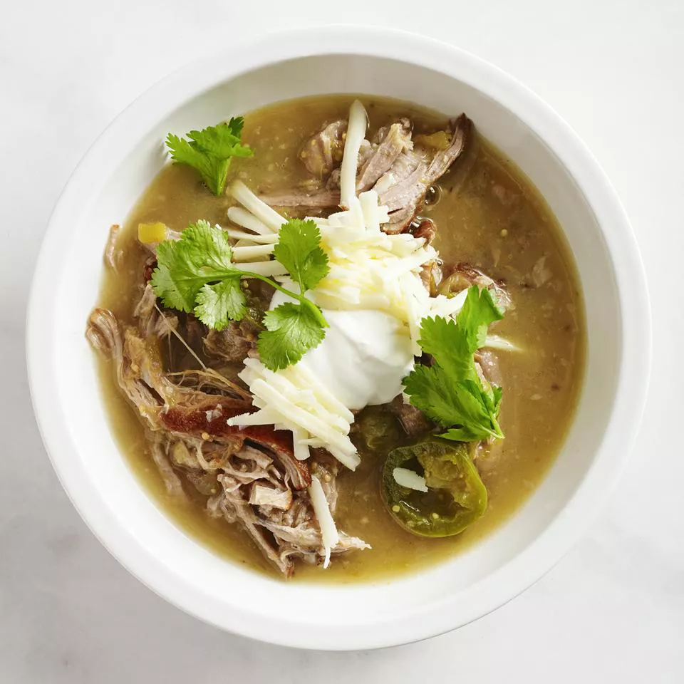

Guisado Verde

An easy-to-make tomatillo and pork stew which can be as spicy as you like by adding more or fewer jalapenos, or as mild as you like by simply leaving out the jalapenos altogether.
With very little effort or preparation, you can make this pork guisado a one pot recipe. Use your soup pot to simmer your tomatillo sauce, empty it out while you blend the ingredients to make your chile verde, and then use the same pot to start building the stew
Ingredients
- 2 tablespoons vegetable oil
- 2 pounds boneless pork shoulder
- 1 large onion, coarsely chopped
- 3 cloves garlic, chopped
- 2 (12 ounce) cans tomatillos, drained and chopped
- 1 (7 ounce) can diced green chile peppers
- 2 fresh jalapeno peppers, sliced
- ½ cup fresh chopped cilantro
- 1 teaspoon dried oregano
- salt and pepper to taste
- 1 quart water
- 1 cup shredded Monterey Jack cheese
- ¼ cup sour cream
- 4 sprigs fresh cilantro, for garnish
Steps
- Heat the oil in a large skillet over medium heat, and brown the pork on all sides. Reserving the juices in the skillet, transfer the pork to a slow cooker.
- In the skillet with the pork juices over medium heat, saute the onion and garlic about 1 minute. Transfer to the slow cooker, along with skillet juices.
- Mix the tomatillos, green chile peppers, jalapeno peppers, and cilantro into the slow cooker. Season with oregano, salt, and pepper. Pour in 1 quart water, or enough to cover all ingredients. Cover, and cook on High for 6 to 7 hours.
- Shred the cooked pork with a fork. Spoon the slow cooker mixture into bowls, and top with Monterey Jack cheese, sour cream, and fresh cilantro sprigs to serve.